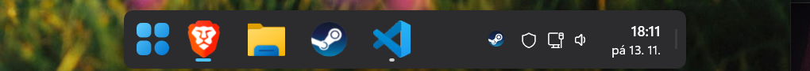

HeMiDockBeta
A replacement of the Windows taskbar: a dock with your apps, the notification area, status icons and the clock – with its own Start menu, control center, calendar and window manager.
Náhrada hlavního panelu Windows: dock s aplikacemi, oznamovací oblastí, stavovými ikonami a hodinami – s vlastní nabídkou Start, ovládacím centrem, kalendářem a správcem oken.
Windows 10 2004 or newer / Windows 11, x64. The installer downloads the .NET 10 Runtime and the Windows App Runtime when they are missing; HeMiDock then updates itself. It is not signed yet – SmartScreen may warn the first time (More info → Run anyway).
Windows 10 2004 nebo novější / Windows 11, x64. Instalátor sám stáhne .NET 10 Runtime a Windows App Runtime, pokud chybí; HeMiDock se pak aktualizuje sám. Zatím není podepsaný – SmartScreen může poprvé varovat (Další informace → Přesto spustit).

What it doesCo umí
Dock
At any edge of the screen: pinned and running apps with window previews, magnification, the notification area, virtual desktops, Recycle Bin and Downloads.
U kteréhokoli okraje obrazovky: připnuté a spuštěné aplikace s náhledy oken, zvětšení pod myší, oznamovací oblast, virtuální plochy, Koš a Stažené soubory.
Start menuNabídka Start
Three looks, pinned apps in groups, all apps, and a search of apps, settings, files and calculations. Quick search with Alt + Space.
Tři vzhledy, připnuté aplikace ve skupinách, všechny aplikace a hledání aplikací, nastavení, souborů i výpočtů. Rychlé hledání přes Alt + mezerník.
Control centerOvládací centrum
Quick buttons, sound with a mixer of apps, brightness, power mode, media, Wi-Fi, Bluetooth and keep awake.
Rychlá tlačítka, zvuk se směšovačem aplikací, jas, režim napájení, média, Wi-Fi, Bluetooth a režim „nevypínat“.
Status iconsStavové ikony
Network, Bluetooth, volume, battery, Windows Security, updates waiting, and signs when an app uses the microphone, camera or location.
Síť, Bluetooth, hlasitost, baterie, Zabezpečení Windows, čekající aktualizace a upozornění, když aplikace používá mikrofon, kameru nebo polohu.
CalendarKalendář
The notifications of Windows at the clock, a calendar with week numbers and events from Outlook or an internet calendar.
Oznámení Windows u hodin, kalendář s čísly týdnů a událostmi z Outlooku nebo internetového kalendáře.
Window managerSprávce oken
Zones to snap windows into, always on top, workspaces that open your apps in their places, rules for apps.
Zóny pro rozmístění oken, okno vždy navrchu, pracovní plochy, které otevřou aplikace na jejich místech, pravidla pro aplikace.
Top barHorní lišta
Optional, like macOS: the system menu, the active app, now playing, status icons and the clock.
Volitelná, jako v macOS: systémová nabídka, aktivní aplikace, právě hraje, stavové ikony a hodiny.
Made your wayPo svém
Keyboard shortcuts for every action, light and dark, own colours, settings with search, backups – in Czech and English.
Klávesové zkratky pro každou akci, světlý i tmavý vzhled, vlastní barvy, nastavení s hledáním, zálohy – česky i anglicky.
DownloadsKe stažení
| HeMiDock-Setup.exe | The installer, for most people: installs for your account, gets what is missing, updates come by themselves.Instalátor, pro většinu lidí: instaluje pro tvůj účet, doplní, co chybí, aktualizace přijdou samy. |
| HeMiDock-Portable.zip | Runs from any folder without installing anything (bigger, updates by hand).Běží z libovolné složky bez instalace (větší, aktualizace ručně). |
| ChangesZměny | All releases with their notesVšechna vydání s popisem změn |
| Problems, ideasProblémy, nápady | GitHub Issues |